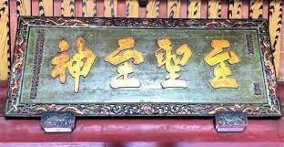
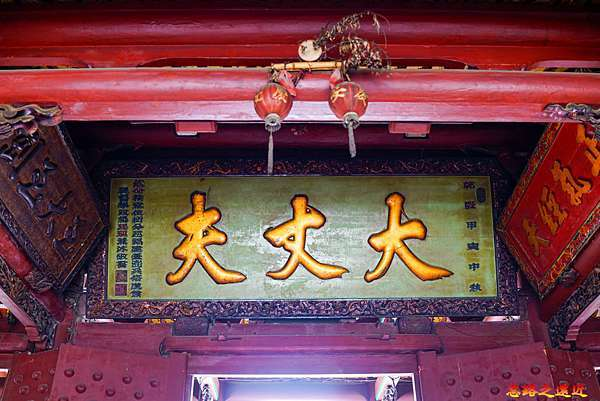

臺灣祀典武廟，俗稱「大關帝廟」或「武廟」，是臺灣唯一晉升朝廷祀典的武廟，其建廟歷史可溯明鄭時期。
臺灣祀典武廟始建於明永曆十九年（西元1665年），鄭經與陳永華於承天府署（今赤崁樓）之南，建寧靖王府（今祀典大天后宮）、又於寧靖王府邸後方的一元子園內建關帝廳和佛祖聽，此關帝廳即為祀典武廟的前身。
清康熙二十九年（西元1690年）臺廈道王效宗整修「關帝廳」，將廟門改為南向，設正殿，新塑「關聖帝君」作為「鎮殿大關帝」，左右塑「關平太子」與「周倉將軍」立像，正殿之前建再拜殿，左右廡廊、初拜殿及三川門，三川門前為石埕，此即為當今祀典武廟之格局。
雍正五年，奉旨祀以《太牢》之祭儀，由清朝官方主持春、秋二祭，也是全台唯一晉升祀典的武廟、故稱為「祀典武廟」。
廟中主祀的關聖帝君原奉祀於寧靖王朱術桂的家廟，毗鄰當時的行政中心—承天府（今赤崁樓）。
三百年來關帝爺靈驗盛名愈開、香火鼎盛，並因豐富的典藏文物、雄偉的建築格局及悠久的歷史，名列「國定一級古蹟」，美食旅遊評鑑『米其林指南』列為三星級景點。
關帝爺的由來，藉由對照明家靖《荊州府志》及清乾隆《江陵縣志》的圖示，清晰可見「長陽王府」封地旁之土城垣，即為關公鎮守荊州時，靜讀「春秋」之處，亦是每逢得勝歸來，寬卸鎧甲犒賞將士的慶功之地，故得名「卸甲山」。後人即於此地興建關羽祠以示紀念，並成為當地信仰中心。
至於關帝爺何以輾轉至臺，則可追溯至明末，緣寧靖王朱術桂成長於荊州城卸甲山下之長陽府，其家祠即祀奉關帝爺，後因荊州城遭李自成叛軍戰火波及而淪陷，朱術桂出奔南京之際，亦奉請卸甲山關羽祠的關聖帝君神尊，一同遠避荊州戰亂，遷至金門、廈門沿海短暫停留。至明永曆十七年（公元一六六三年），鄭經迎請明寧靖王到臺灣，擁立明朝餘脈於承天府署旁的西定坊，建立寧靖王府邸（今祀典大天后宮）安置，並提供歲祿。
明永曆十九年（公元一六六五年）鄭經與陳永華君臣積極設置全臺首學（即當時的文廟），而武廟則就近奉祀寧靖王虔誠守護的關帝神尊。官府分別設置文、武廟的格局，於後續清廷治臺時期更清晰可見。當時鄭經出資興修四大廟聽，其中關帝廳和佛祖廳設置於承天府署之南，這個位置即是寧靖王府邸後方的「一元子園」，亦是祀典武廟的前身。
一元子園是寧靖王祭祀的家廟所在，園內共有三個祭祀空間。其中一間為單進建築的「關帝廳」（坐南朝北—與現今的方位相反），供奉著朱術桂自家鄉荊州奉請來臺的關聖帝君，即現今軟身金尊的「二關帝」神像。
另兩間分別為供奉玄天上帝的「上帝廳」（坐北朝南，即現今的三代廳）及供奉觀世音菩薩的「佛祖廳」，同時在「佛祖廳」旁開一扇通往府外的小門，提供來台的明室宗戚參拜，此即武廟最初的奉祀格局。隨著時代更迭，觀世音菩薩像則被後人奉為祝生娘娘續享香火至今。
清康熙二十九年（公元一六九Ｏ年），巡道王效宗整修「關帝廳」，將廟門改為南向，設正殿，新塑「鎮殿大關帝」神像，左右陪祀「關平太子」與「周倉將軍」立像，正殿之前則依序設有再拜殿、左右廡廊、初拜殿、三川門及石埕，此為現今祀典武廟的初始格局。
雍正五年（公元一七二七年），奉旨由清廷官方主持春秋二祭，祀以《太牢》祭儀。此後名列祀典，也是全台唯一列為官方《祀典》殊榮的武廟。